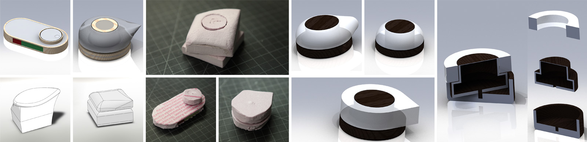
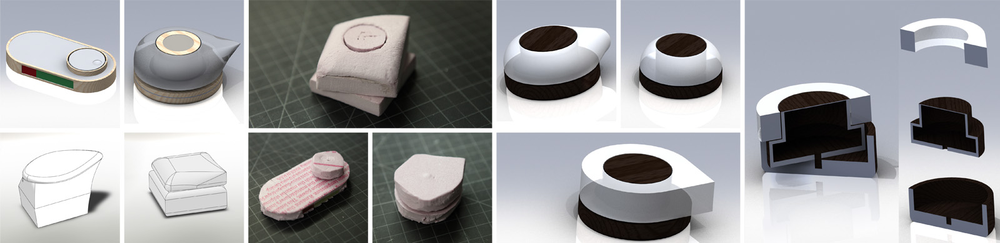
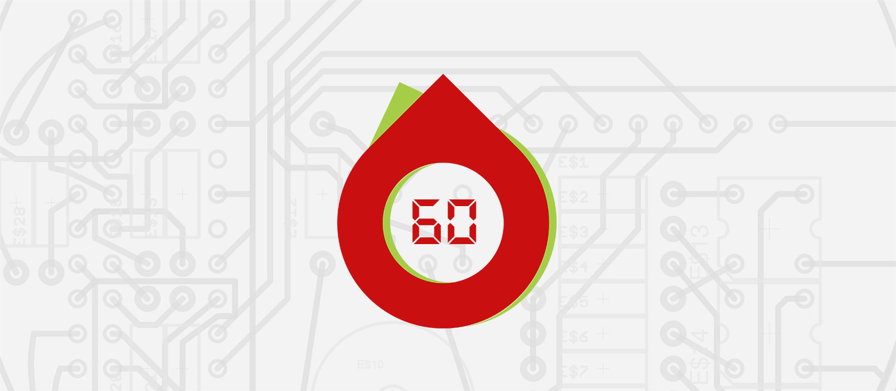

Current digital timers are cheap and hard to use.
Digital Divide
Analog timers are successful on many usability fronts through direct use of the circular clock metaphor, however, almost all digital timers throw all those gains away in their tired rectangular and button-oriented designs.
Distant Readability
Timers on the market are hard to read from afar because they typically have to make the same tradeoffs: accuracy vs. readability or information density vs. size.
Time Limits
Analog timers have a hard limit: 60 minutes, 90 minutes, etc. But, what about timing a roast? a stew? or even ribs? Digital timers by their nature offer a virtually unlimited ceiling on the amount of time able to be counted.
Chroma is easy to use and easy to see.
Twist
Start twisting Chroma and the clear acrylic top glows white while the led display under the thin wood veneer in the center displays the current number/time.
Click
Click the entire top portion to start timing and the color shifts to green.
Walk Away
As time goes on, Chroma turns red until time runs out and a casual glance gives an approximate estimate of the amount of time remaining.
 

Chroma’s interface is as powerful as it is simple without getting in the way. It breaks the 60 minute timing barrier with its digital heart while still retaining the twist and click elegance of more traditional analog timers.
Chroma: In Progress I
Two seven-segment displays underneath veneer
The wooden circle in the center of Chroma is actually a hollowed cylinder covered with a thin piece of veneer. Underneath that veneer are two seven-segment displays that, when displaying numbers, shine through the veneer.
Multiple iterations of the circuit design were created as I learned more about the process and ran into space and efficiency issues. You can download the Eagle files of the two most significant versions of the boards on Github as well as the Arduino code written.
Chroma: In Progress II
Breadboarded prototype of the circuit
In the end, a working physical aesthetic prototype was created for Chroma that demonstrated the twist/click/glow interactions while also exhibited the desired aesthetic values.